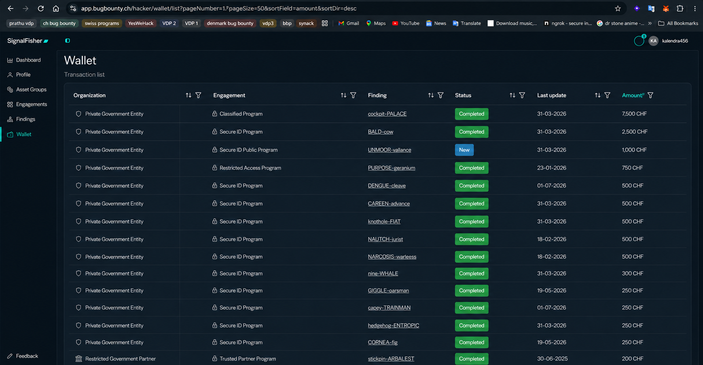
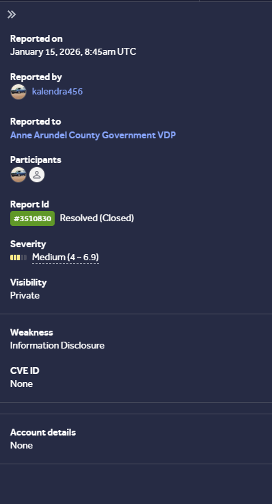
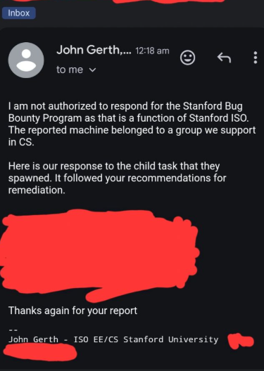
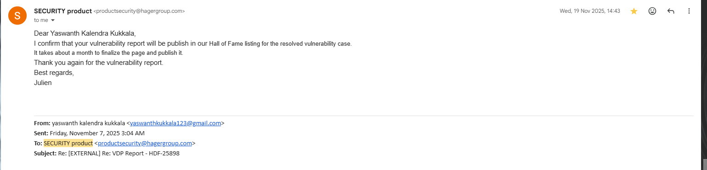
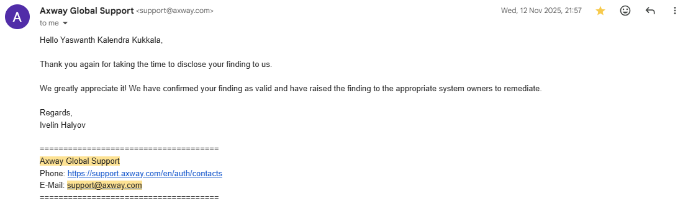
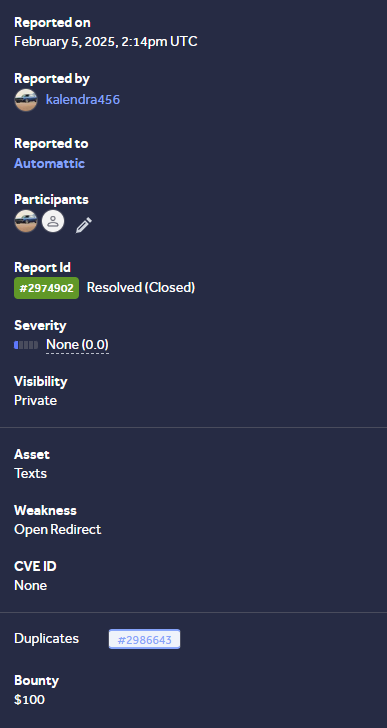
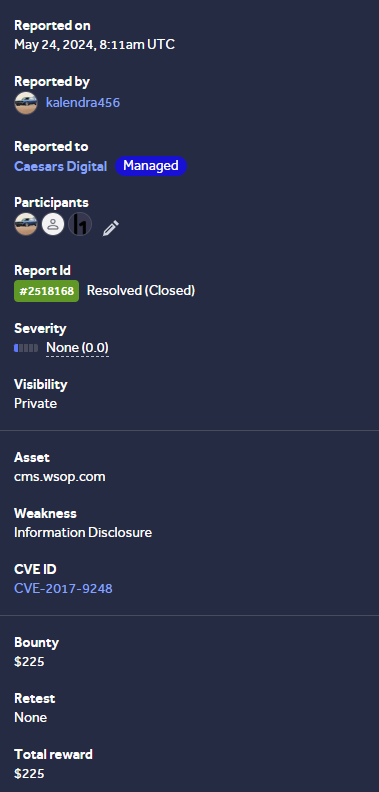
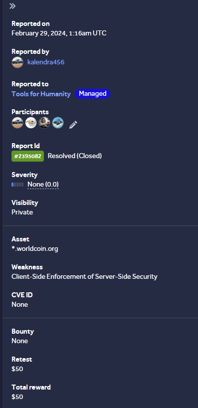
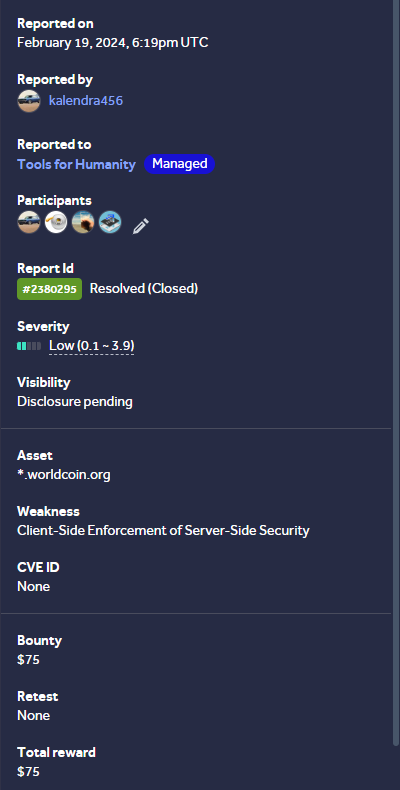
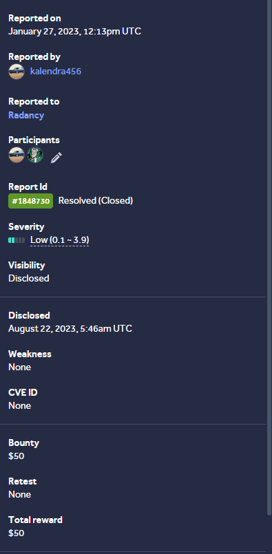

Open proofSwiss Bug Bounty — High Impact Findings
Private program finding summary showing critical and high-impact paid results.
Responsible Disclosure Proof Gallery
A curated evidence page for Hall of Fame listings, responsible disclosure acknowledgments, validated reports, and high-impact bug bounty results. The main portfolio stays clean, while this page gives recruiters and security teams a proper proof gallery.
Featured Evidence
These screenshots are the best to show first because they combine brand trust, public recognition, and validated security impact.

Open proofPrivate program finding summary showing critical and high-impact paid results.
 Open proof
Open proof
Public Hall of Fame recognition showing Yaswanth Kalendra Kukkala listed under 2025.
 Open proof
Open proof
Public SAP Security Credits listing with Yaswanth Kalendra recognized in September 2025.
 Open proof
Open proof
Accenture responsible disclosure acknowledgments listing the researcher profile.
 Open proof
Open proof
Public Hall of Fame entry for a valid information disclosure finding.
Complete Gallery
Full proof gallery including public Hall of Fame pages, acknowledgments, validated findings, bounty report summaries, and remediation confirmations.
Private program finding summary showing critical and high-impact paid results.
Open proof
Public Hall of Fame recognition showing Yaswanth Kalendra Kukkala listed under 2025.
Open proof
Public SAP Security Credits listing with Yaswanth Kalendra recognized in September 2025.
Open proof
Accenture responsible disclosure acknowledgments listing the researcher profile.
Open proof
Public Hall of Fame entry for a valid information disclosure finding.

Open proofValidated medium-severity information disclosure report under a government VDP.

Open proofEmail acknowledgment confirming the reported machine was remediated following recommendations.

Open proofEmail confirming the resolved vulnerability case will be published in the Hall of Fame.

Open proofVendor confirmation that the finding was valid and raised to system owners for remediation.

Open proofResolved private report with bounty evidence for an open redirect finding.

Open proofResolved report for a vulnerable Telerik UI for ASP.NET AJAX component, mapped to CVE-2017-9248, demonstrating encryption key disclosure and sensitive information exposure.

Open proofResolved report showing client-side enforcement of server-side security weakness.

Open proofResolved/disclosure-pending report from the same target category with bounty evidence.

Open proofResolved and disclosed report evidence from HackerOne/Bugcrowd-style workflow.